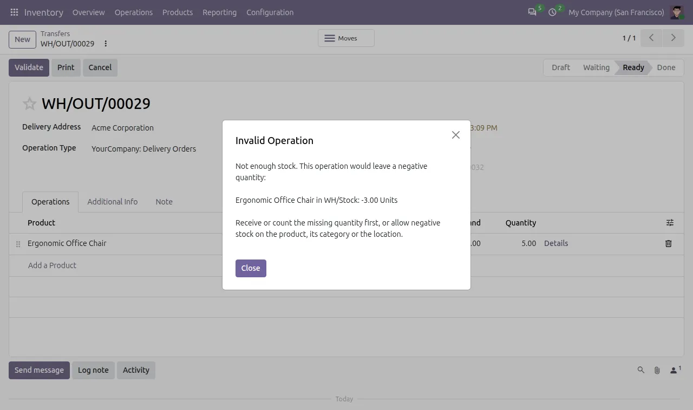
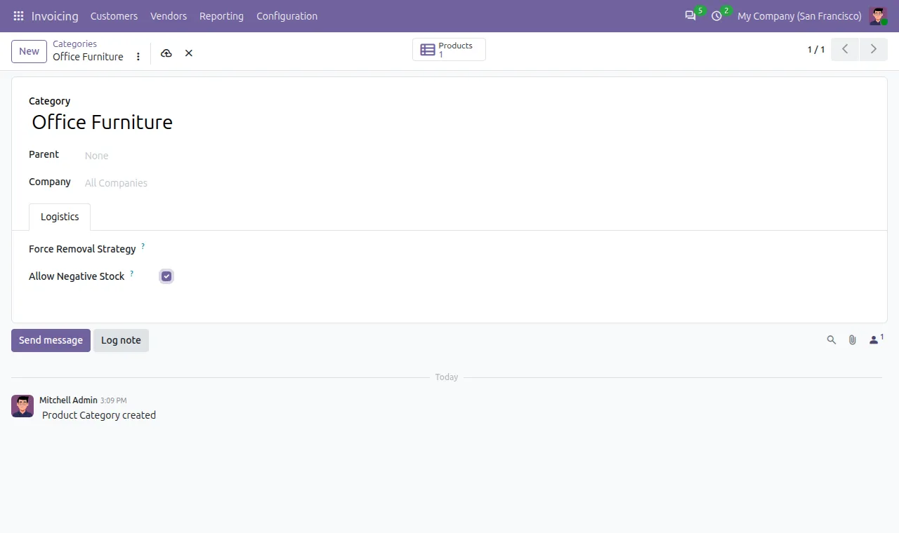
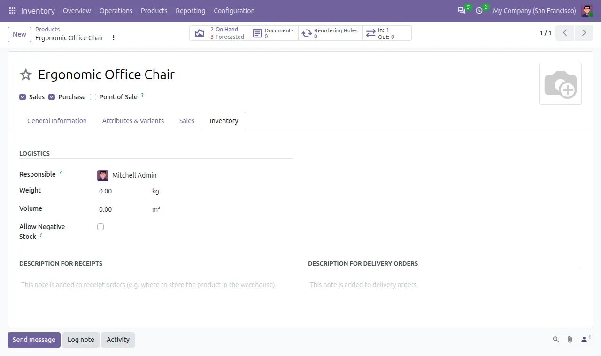
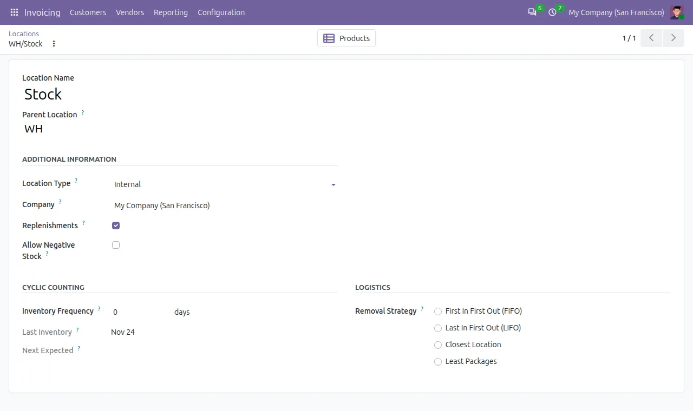

Prevent Negative Stock - Block Validation Below Zero
Prevent negative stock: refuse to validate a delivery, transfer, manufacturing order or inventory change that would leave a product below zero. Allow exceptions per category, product or location.
- Price
- Free
- Odoo versions
- 20.0
- Technical name
tamadoo_stock_no_negative- License
- LGPL-3

Text and screenshots below are from the Odoo 20.0 version of this module.
Odoo refuses any stock operation that would leave a product below zero. Exceptions with one checkbox.
What it does
In standard Odoo you can validate a delivery for 5 units when only 2 are on hand: the on-hand quantity simply becomes -3. This module stops that. The validation is refused with a message that names each product, lot and location that would go negative, and nothing is changed.
- Every stock operation: deliveries, internal transfers, manufacturing consumption, scrap and inventory adjustments.
- Per lot / serial number: a lot that is not in the location cannot be delivered.
- Exceptions: tick Allow Negative Stock on a product category, a product or a location.
- Only tracked (storable) products in internal and transit locations are checked. Services and untracked goods are never blocked.
- Point of Sale orders are never blocked: the customer has already paid, so the sale goes through.
- Works for every user: inventory users get the same clear message, no access error.
How to use
1. Install the module
Nothing to configure: from now on every storable product is protected in every warehouse.
2. Validate a transfer without enough stock
Odoo refuses the validation and shows what is missing. Receive or count the missing quantity, then validate again.

3. Allow negative stock for a product category (optional)
Inventory › Configuration › Product Categories, tab Logistics: tick Allow Negative Stock. Products of that category can go below zero again.

4. Or for one product
On the product, tab Inventory, section Logistics.

5. Or for one location
Inventory › Configuration › Locations (needs Storage Locations in the settings): any product may go negative in a location with the box ticked.

Requirements
- Odoo 20 Community or Enterprise — Inventory (
stock). - Quantities that are already negative before you install stay as they are: receive or count them to bring them back to zero.
Related apps
- Stock Card Report - Kardex with Running Balance: every move in and out per product and location, with the running balance.
- POS Stock Warning - POS Low Stock and Zero Stock Alert: warn the cashier before selling what is not on the shelf.
- POS Product Stock - Show Stock Quantity on Product Cards: the on-hand quantity on each product in the Point of Sale.
Tamadoo · tama.odoo@gmail.com
Get Prevent Negative Stock
Questions before buying? Write to tama.odoo@gmail.com.